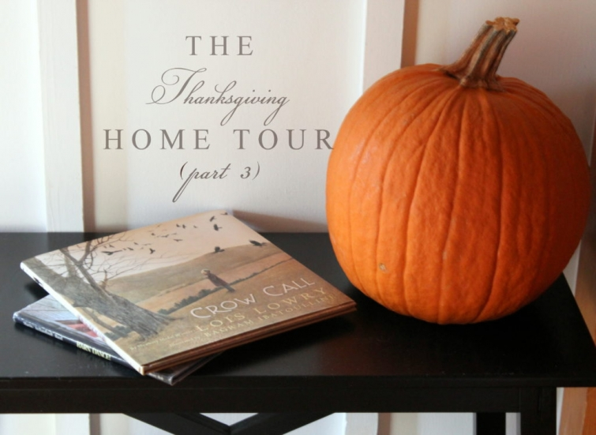
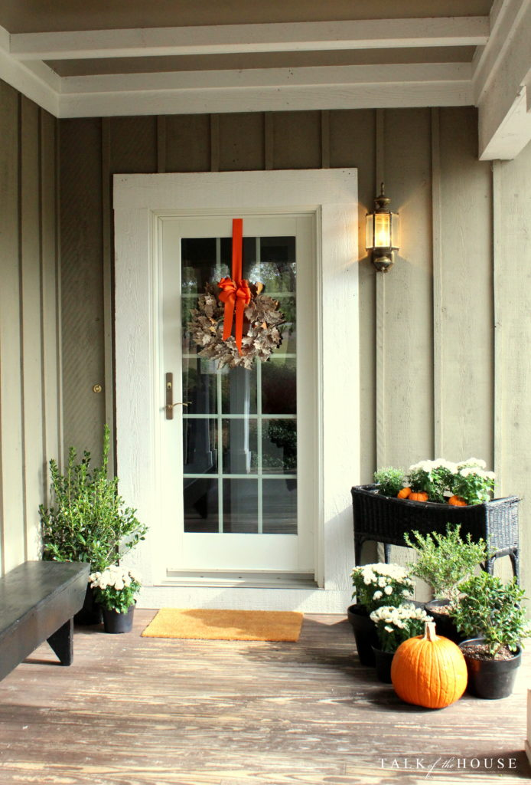
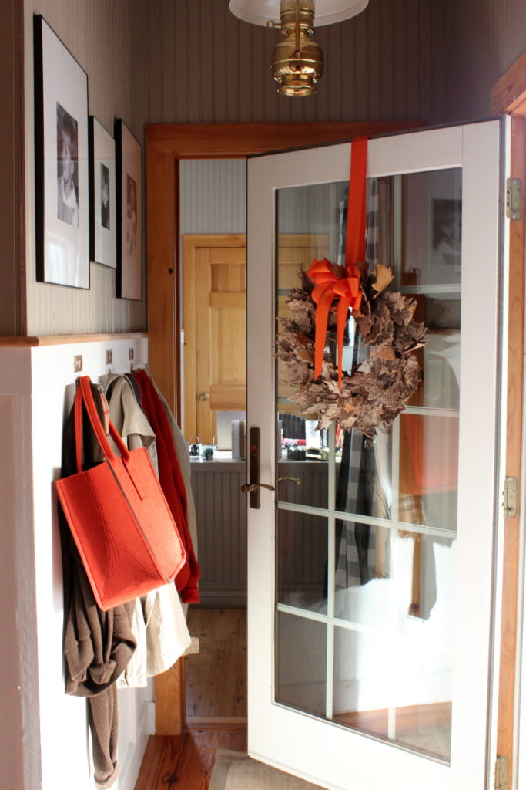

.png)
.PNG)
.PNG)
.PNG)
.PNG)
.PNG)
.JPG)
.JPG)
.PNG)
.PNG)



Goodness gracious! I should have never asked all of you what your favorite Thanksgiving food was. I got sooo hungry reading all your comments in part 2! From coconut cake to green bean casserole to cranberry salads and everything good in between, you named a bunch of delicious dishes. It was fun reading all the various things that are served around the country! 🙂

For our final stop on this Thanksgiving tour, we are coming in the side door today. (The one for family and friends. 🙂 ) A reader asked me how that wreath on the door was constructed. I am not really sure. I purchased it at Target last fall, and it looks like it has leaves made from birch bark that are glued onto a grapevine wreath. (I just added the orange ribbon and bow.)

Come on in the door, and drop off your coat if you need to.
 We are going down this little hallway…
We are going down this little hallway…
through the dining room that you saw in part 2…
and out onto the back screened in porch.
When I transitioned from Halloween to Thanksgiving decorating, I moved the pumpkin pillow from the family room sofa to the one out here.
The pumpkin plates that were on the porch table for Halloween are now in the wall arrangement.
I did this month’s chalkboard appropriately with the lyrics to a Thanksgiving hymn.
(One of my favorites for the season. 🙂 )
The drink dispenser stands waiting to serve sweet tea…
while this arrangement of mums and pumpkins balances the other end of the buffet table.
And now to the porch’s Thanksgiving table.
I stole borrowed the plaid tablecloth, plaid salad plates, and candle holders from my husband’s upstairs office. You may remember these items from a hiking party we hosted around this same time last year.
Do you remember there is a set of Table Topics cards in the giveaway? Well I put one card at each place setting and the remainder of them in the centerpiece. They make for great talk around the table. 🙂
I’ve mentioned before that when I was growing up, my family had a large pecan orchard, and each November my parents, siblings, and I would pick up the pecans that fell from those trees. As I recall, our orchard was mostly of the Moneymaker variety, along with a few rows of Stuart, and a couple of random Schley trees. My father needed the nuts picked up, and it was a way for us children to earn Christmas shopping money.
So every November, I remember racing my brother, Mike and my sister, Paula to see who could fill up their bucket first and who would have the most when we would weigh in at the end of the day. As a nod to that long-ago chore, I put small bags of pecans on the table at each place setting. Raw nuts (out of their shells) would probably be more appreciated, but I used the ones in the shells because they evoke such a memory for me (and probably for my side of the family as well.)
And that brings us to the end of this year’s Thanksgiving tour. Thank you so much for coming to visit! I hope you enjoyed seeing all the orange and brown decor with its recycled Halloween pumpkins. Can you believe it is only a week until Thanksgiving??! We are still looking at temperatures in the 80’s here, so it just does not seem possible that Thanksgiving should be so close. 🙁
And finally, you have one last chance to get your name in for the Thanksgiving giveaway before it closes. To enter, simply leave a comment on any post (on the website – not an email reply to it) that publishes between 11/11/16 and 11:59 p.m. on Thursday, 11/17/16. You may leave a comment on all the posts that publish in that time frame for more chances to win, but please leave only one comment per post. I will do a random drawing after the close of the contest and announce the winner in the next post that publishes after that date. (You can read more details about the items here.)
I am going to close with another question today to make it easy for you to leave a comment…
If you could have any view from your back porch, what would it be?
Can’t wait to read your answers!
(And good luck in the contest. 🙂 )


.PNG)
I would love to have a view of the mountains…..so peaceful and beautiful, especially at this time of the year! I so enjoyed your Thanksgiving tours and really enjoyed the tablescape in this post – the plaid tablecloth, the plaid plates, the centerpiece….all SO beautiful! Thank you for sharing – Happy Thanksgiving to you and your family! Blessings….
So hard to choose between the Gulf and Blue Ridge Mountains.
The Gulf of Mexico! Or my children’s backyard!
So many beautiful places to choose from for a view from my back porch. I’d probably like it to be in the mountains, because, then my trips to the beach would still be so anticipated and relaxing!
Kelly,
What is the brand, type and color of the tote hanging in the entry way? Thanks!
Love your pecan story! Thank you for sharing! Would love to win!
Karen
Beautiful tour! I love the photographs of your children that we see every time we tour!
We have a beautiful view now in the Suburbs of Birmingham, AL, but if I could have any view it would be of Mountains with a lake I believe. I have never had that choice! Lol!
Here in Kentucky I love looking to the east at the rolling hills that are a part of the Appalachian Mountain range. I also would love a lake view as well!!
Hi Kelly! I just discovered your blog today and love it! Your Thanksgiving decor and your home are beautiful. I look forward to following you. As for views, I live in Lake Arrowhead, California which is a beautiful place. I have a lovely view of the forest from my home but wish it included a view of our lovely lake too. Happy holidays!
My dream view from a back porch would be overlooking a lake as the seasons change while I sip on a delicious cup of hot tea in the morning.
Favorites on Part III: The back door! It is so welcoming for family and friends. And the picture books. Don’t you love decorating with books? So charming and simple. It’s Thanksgiving Week! (I’m a teacher…) Have a happy, wonderful Thanksgiving.
Hi Kelly!
I very much enjoy your gorgeous home tours! Wishing you and yours a blessed Thanksgiving especially the dessert course (my fav)!
If we had an enclosed back porch, we could enjoy our neighbor’s ever changing landscape of trees. By the way, an enclosed back porch has been on my wish a good long while….here’s hoping since my husband just retired.:)
Happy Thanksgiving and looking forward to future posts,
Joyce
My happy place is Cades Cove in the Great Smokey Mountains! Although the fire in Walland is pretty close! Kelly you are such an inspiration to all of us with your decorating savvy!! Love everything you do!
Happy Thanksgiving to you and your family!
The beach and the ocean with mountains around me and behind me!
I would love to have a view of the Blue Ridge Mountains and a lake.
I love those plates! You really have a gift for making a beautiful table! Happy Thanksgiving!
I am envious of your screened in porch and you truly decorate for the season or holiday in such a lovely way. I could use your touch. A touch here and there is festive without being overwhelming…nice job. Hope you and yours have a wonderful Thanksgiving day.
I’d love to sit on a porch and gaze upon the Rocky Mountains with a mountain stream rushing nearby. I think I would be content all day long.
Kelly , I love your porch and porch swing .
I have always wanted a porch that overlooked a lake through a wooded lot !
Happy Thanksgiving to you and your family !
I always love your screened porch. This year the screen porch will be comfortable even in November. I would Ike to see acres of land with big shade trees and a stream from my back porch. At first I thought the ocean and then I thought the mountains but those are special places to me for visiting. But for day to day living I want land for peace of mind, trees for shade, climbing, and swinging and a stream for visiting on daily walks.
Kelly ,
Your porch looks so inviting ! If I had your porch and porch swing, I would find it difficult to get anything accomplished. If I could have a porch that overlooked a lake through a wooded lot I would be in heaven !
Like your orange plaid cloth and plates, Kelly! My back porch view would be of the mountains near my hometown in Virginia. Have a peaceful Thanksgiving~Julia
Kelly,
Love your porch! The tablecloth is perfect. There is just nothing like a porch especially a covered, screened in porch. I have said this before but your chalkboards are perfection. Still on a mission for orange plates. I just discovered I can order plates in bulk from Dollar Tree. Yay!
DiAnne
If I could have any view from my back porch, it would be the beach. I love the water; definitely my idea of peach on Earth. I loved taking the tour of all your beautiful Thanksgiving decorations. Wishing all of you a blessed Thanksgiving surrounded by family and friends.
Your porch looks so cozy and welcoming! I’ve never been a huge fan of orange ‘anything’, but you’ve really pulled the whole autumn color scheme together in a way I like a lot. I also love the extra touch of using bags of pecans for each place setting. I, too, grew up picking up pecans every fall to earn money for Christmas, and now our children do the same–usually picking up on halves. In fact, one child asked for one of the Stuart trees for Christmas several years ago, so he could make ALL the money. LOL We have Mahans, Stuarts, Schleys, Money Makers, and lots of seedlings. Lots of good memories! And speaking of views from back porches, I like what I already can see–fields and pecan trees. 😉
Happy Thanksgiving!
Your home always looks so warm and inviting. I look forward to see how you’ll decorate for the change of seasons, holidays, birthdays and anniversaries. I don’t know how you find the time to do it. My friends and I laugh that we have less time to get things now that we’ve retired than we did when we were working. Thank you for taking the time to write your blog and share your life with us.
My perfect view from my back porch would be the ocean. Oh how I love to listen to the waves crash on the shore. Thanks for the awesome give-a-way. Happy Thanksgiving to you and yours!
Thanks, again, Kelly for your beautiful and inspiring post.
The view I have from our back porch here on Hilton Head Island is exactly what I adore. I see our pool, lots of trees (unfortunately we lost quite a number of them during Matthew’s visit) and a golf course in the distance. We have several bird feeders and bird baths which allows us to admire our feathered visitors. THE perfect view for me!
I lived in Germany for three years and my view from my kitchen was the German countryside. The local farmer would move his sheep twice a year and my young son and I loved seeing the lambs in the spring.
I wish I could see water, a lake or the ocean…..
I love your pops of color with the change of seasons.
As always your posts are a highlight; LOVED the pecan story! I live on a family “home place” in Griffin – a bit up the road from you – and when we came here 35 years ago there were many many pecan trees; not so many now – age and the droughts of recent years have taken a toll. I fear this drought will too. My Grands used to love to pick up pecans at TG; I paid them a penny per pecan and they thought they were rich! And it helped them with counting too (Teacher Grandmothers never fade away!). I don’t know what variety they were and I’d never heard of Moneymakers – GREAT name! My favorite TG setting would be our home on the water in MD; last year we ate on the front lawn overlooking the water – NEVER have eaten TG outside before! All the best to you and your family!
As always, a visual feast. Thank you, Kelly.
Kelly, your porch is beautifully decorated. Love the table, the tablecloth and plates are so perfect. Thanks for sharing your pecan story – happy memories for you all.
My perfect view would include rolling hills, trees, sheep, a river, pastures, cattle. Enjoy your weekend. T
It would be the view of a lake! Thanks for the great Thanksgiving tour!
Ha! I’d go for my view from my FRONT porch. We’re in the mountains of North Carolina and at an elevation of nearly 4000 feet. With the leaves off of the trees like now, we have a view of beautiful blue mountains through the silhouettes of trees. In the summer, it’s like being up in a tree house. You can’t see the road or any houses in front of us (just our winding driveway). We love it here and wouldn’t trade it for anything. Thanks for the opportunity for the giveaway.
I would choose the view of Michigan’s beautiful Saginaw Bay, which is part of Lake Huron, one of the Great Lakes. I don’t live very far there and would love to live on the Bay. Love your porch decorating Kelly. Especially liked the orange tablecloth and matching plates.
My screened back porch looks out onto beautiful woods with all sizes and shapes of trees. It is so calming and peaceful in all the seasons.
I love seeing your beautiful Thanksgiving decorations, Kelly! Hope you are looking forward to a great Thanksgiving at your house!
Kelly, it’s all so beautiful. You are truly blessed, as are we, your loyal readers. 🙂 thanks a million for sharing all of your lovely Thanksgiving decor. As for the view? I would love to be back in the home where my children grew up watching them and my beloved collie play. Time does indeed fly.
You have so many beautiful items to decorate with for all seasons and holidays. where do you store all these items:
Funny, you would think I would say I have the view already! But if I could have ANY, it would be maybe a view of the Shenandoah Valley, with a river or stream, and mountains in the distance. I used to want a beach view, but not these days.
Loved the porch decor, the orange and brown with touches of white were refreshing. I love that tiny pumpkin by the Mums – is it real or artificial?
I hope you will take a breather after your drawing, and enjoy this Thanksgiving!
What a lovely tour and visit on your lovely back porch! I really felt like we had a nice visit! Love the chalk board– love that hymn– I will be humming it all evening!! I think the view I would like to have would be the lake view I have at my home. It is peaceful and something different every day! Fishermen, sailboats and lovely shorebirds plus deer in the evening. If we are lucky, we also can see turkeys and a pair of bald eagles who live near by! As Dorothy says,” There is no place like home!” Happy Thanksgiving, dear Kelly!
I wish my view was a beautiful mountain and stream. Hope you have a happy Thanksgiving.
Love your home all decorated for Thanksgiving! So warm and inviting!! My favorite view from my backyard……during the winter…..is the fresh fallen snow lying on the open field behind our house. I love it when it hasn’t been “disturbed” and is sparkling like glitter in the sunshine!
The view I would love would be mountains, streams and trees. Not asking much, am I? Love the orange table.
I would love to see the sunset or sunrise. We live in a heavily wooded area which is beautiful in itself…especially in the fall but we see very little sky! Love your decorations and I love decorating for Thanksgiving. So many things to be thankful for.
Kelly,
Your tour was wonderful. I enjoyed entering on the friends and family side, it always looks so pretty. The orange on the table in the sunroom is so pretty. I love those plates.
If I could have a view of anything it would be a body of water. Maybe a pond or stream that would run through the backyard. Alas, there are no houses on the stream that runs through our neighborhood so I walk by it when every I’m out for a walk.
Enjoy your Thanksgiving!
xo,
Karen
My favorite view from our deck is a gorgeous sunset, layers of orange and purple gently closing down the day.
Water of any kind – river, ocean, or lake!
I would love to have a lake view lined with maple trees, and the mountains in the distance. Also, you floor plan is the dream house for the lake home I want one day. If not a lake view, a horse pasture and a barn. Happy Thanksgiving!
I would look in all directions. The view is awesome from the west to the east. Your home is lovely. Have a blessed Thanksgiving.
I would love an ocean view. That is where I am the most content and relaxed.
Happy Thanksgiving!
I would love a quiet Wisconsin lake view.
Rolling hills and pasture. I miss the quiet of the country. I love your table setting. I enjoy your blog. Thanks for inspiration you give me.
What a fun question! I go back and forth between mountains w/a lake or rolling hills with pastures. I love lake houses and farm houses equally. Your house is so lovely, and your porch is one of my favorites. Thanks again, Kelly!
My choice of view from a back porch, would be a lovely yard filled with flowers, with a half circle orchard of nectarines, apricots, pecan, English walnut trees which would edge the woods and a raised bed of yellow tomatoes, grape tomatoes, bell peppers, with a lovely sprinkling of rosemary, basil, and cilantro…is it too much to dream?
It is still warm and sunny here in southern Indiana, quite a treat.
We are thankful for good health, healthy young adult children, spreading their wings.
Thank you for sharing your lovely home. I embrace the ideas I get from it — my all time favorite is your chalkboard verses (and back porch). That is skill I would like to be able to master, your script is lovely.
This is just dreaming on my part but id like to see lots of trees beautiful plantings and a little stream that meanders by and that has a cozy seating area and children playing maybe a fire pit if Im dreaming
Beautiful! I love all of your tablescapes! You sent DiAnne and me on a Dollar Tree mission. So far, no orange plates! I would so love a view of the ocean from my porch!
The view I would love to have from my back porch would be of our backyard with our young children playing…if I could go back in time that would be the best as they are now 21 and 25! Thanks Kelly for the beautiful posts of family, travel and most of all your lovely home! Happy Thanksgiving!
I admire all your holiday decorating because it looks so natural in your home. I would love to have a view of Lake Michigan from my back porch, but am still content with what I have looked out on for the last forty-five years. I look forward to gathering with my family to give thanks for our many blessings. Happy Thanksgiving to you and yours.
I love the farm view that I currently have with corn, red barns, and cows in sight, but I would love an ocean view if I could afford it. I have always been a beach girl!
The view I really have is one I am most grateful for. My yard is not large or grand. However, I have a small perennial wildflower garden and birdbath. Several bird feeders are there for my feathered friends (squirrels too.) I also have an old-fashion clothesline that I love to use.
The perfect view would be snow covered mountains. Thanks for the chance to win. I hope you and your family have a fantastic Thanksgiving!
Any ocean view would be my ideal….Happy Thanksgiving to you and I LOVE all your decor.
Hi Kelly,
thanks so much for sharing all your ideas. Totally forgot on my last post, that I am a lover of carbs…lol….so for me it is the garlic (with bacon) mashed potatoes, and of course pumpkin pie.
Wishing you a Happy Thanksgiving from Canada! 🙂
Tracey
I would choose the view I grew up with. We lived in the woods on a river (really a stream where it flowed past our house). Just across the river were stone bluffs, with a strip of woods in front. The wildlife we would see! Herons, hawks, owls, deer, every sort of woodland creature… even a cougar one time! At night we’d hear the sounds of tree frogs, crickets, Katydids, and owls, as well as the trickle of the river. Now, if I could choose a house in which to dwell, it would be YOURS!
I love your idea of putting Table Topics cards on the table. We’ve enjoyed our “intro” set so much (on a day-to-day basis!) that I gave some to friends as Christmas gifts one year.
My view into our backyard is special to me. I’ve looked out into to this year with the evergreens and the occasional hummingbird even in the winter. It’s home. I feel refreshed by your blog.
Happy Thanksgiving! That is my favorite Thanksgiving Hymn also. I love the orange touches. My favorite view (other than my grandchildren) is actually the view from my front porch – the beautiful Colorado mountains. I am curious – what are the wooden blocks in the bowl on your porch table?
I love seeing your decorated screened porch. We, too, have a screened porch. It’s my favorite part of the house in warm weather. And my favorite view is just where I am . . . I love seeing the trees and birds and sharing them with family and friends. Happy Thanksgiving to you and yours!
Kelly,
The porch looks so very nice. I love the table cloth and matching salad plates. If I could have any view from my back porch I would choose the view I have (or any view for that matter) with my family, friends and dog in it. What I see daily is a field with cows and a tree lined stream. I love to see how our view changes from season to season. Thanks for sharing. Take care.
Dawn
The view I have out my kitchen window is stunning. Serene woods filled with deer and assorted wildlife, a steam and tall stately trees. I am content in my home!
I’d love a view of the Mountains! Along with a lake, if it isn’t too much to ask! Love your blog, it’s one of my favorites!
Happy Thanksgiving to you and your family.
The view from our porch is land that has been in my
husbands family for over ninety years. We see deer and
turkey and enjoy the changing of the seasons. I am glad
you are still doing your blog and enjoyed seeing your fall décor.
So glad you are back and showing us your wonder creativity. Have a blessed Thanksgiving. Peggy
Oh, I know exactly what view I love! We lived in Boone, NC, while my husband went back to school, and I would love to have a view of the mountains and all kinds of nature from my back porch!
Have so enjoyed your Thanksgiving tour! In part 2, I thought your orange plates with the turkey salad plates were perfect. Thank you for letting us know where you got the maple leaf place cards. Oh, and we always made our ambrosia just like yours!
In part 3, I like how your salad plates match your tablecloth. They are so pretty just as they are, but I was wondering how it would look if the plates were turned on the diagonal? I’m not sure, just wondering…
I hope you and yours have a wonderful Thanksgiving! I know it won’t be the same without your precious father-in-law, and I pray the Lord will again comfort your hearts during this holiday season.
Kelly, I love the porch and everything on it. I too decorate for Halloween and Thanksgiving at the same time. I love putting the Halloween away and just having pretty Harvest decorations until Thanksgiving.
If I could have any view it would be the ocean, but I am quite content with my gardens, the trees and my pool.
Happy Thanksgiving to you and your family!
I love those cards!
In answer to the last one, I’d be looking at a calm lake in a place that doesn’t have a lot of snow or isn’t too hot in summer. Where is that place ? I made a trip to Dollar Tree, and was happy to see a stack of orange plates. 🙂 To you and your family, have a blessed Thanksgiving.
So hard to answer as I love so many scenarios! But probably it would be the ocean, specifically the Pacific with an accessible sandy beach, some rocks for exploring and a big red umbrella!
I love your story about picking up pecans!! And to put some on the table is a nice tradition.
What a great way to honor your childhood memory by adding the pecans to the table!! I plan to scatter a few chesnuts on mine. Your entry and porch look fabulous. Your porch is one of my favorites. I’m sure in your warmer climate you’ve been able to eat out there for Thanksgiving. Tomorrow is supposed to be 77 here, but then it’s all downhill from there. 😉 I would love a mountain view from my back porch!! 🙂
Thank you so much for sharing your home and your life with us. I love all of your decorating ideas; everything is always so pretty and “homey”. I just shared your blog information with my daughter who is getting ready to buy her first home and decorate it. She can get some really great ideas for you since she has a clean slate. Happy Thanksgiving!!!
As I look out from my back porch I see our small yard and beyond a man made pond, which sometimes we’re lucky enough to see a few ducks or egrets visiting. It’s home, so of course, my favorite view.
Thanks for the Thanksgiving tour….Happy Thanksgiving to you and yours.
my favorite view WOULD BE the pecan trees in my grand-dad’s yard.. Your pecan story flooded my eyes with memories of gathering the pecans hidden among all the fallen leaves… as children we thought that was a treasure hunt, and my grand-dad was grateful he didn’t have to bend over about a million times to gather the nuts!!! HAPPY THANKSGIVING to you & your family…always treasure your posts..
What a lovely table you’ve set! If I could have any view it would have to be the vineyards of Italy. Absolutely lovely and peaceful.
Wishing you a happy Thanksgiving holiday with your family!
My granddaddy had a huge pecan tree we’d sit under after dinner (they called lunch dinner and dinner supper) and in our own home we ALWAYS had a copper kettle filled with pecans. I think I spent half my childhood cracking and picking out pecans always trying to get it out in one whole piece 😊 happy memories. I just filled our little nut dish with shelled nuts, it reminds my husband of his brother who went to heaven too young. If we had any view we would want a large lake view.
Hi Kelly, I just love your porch’s Thanksgiving table. We grow a lot of pecans here in southeast Oklahoma and I think it’s sweet that you give a nod to your childhood by including bags of them on your table.
I’m so glad you’re going to be continuing your blog. I get so much inspiration from reading it. But as other readers have said, do what’s right for you. Obligation is not always a good feeling.
We are expecting a cool down this weekend which will be very welcome. Praying for rain (extreme drought here) and for all of the South. We have local State Forestry Crews headed to fight fires in North Carolina. Please pray for their safety.
I pray you and your family have a Happy Thanksgiving.
Thanks for the tour of your wonderful home, Kelly! Like you, I decorate for Fall and Halloween at the same time. When Halloween is over I put those things away and Fall the decor stays. I love Fall so I have lots of foliage and pumpkins (my favorite!). To go back to your first post, my husband retired almost 2 years ago and it threw me off my schedule too. I love having him home but it really is an adjustment.
To answer your question, I would love a water view but my porch is my happy place and I have my beautiful garden to look out on. I can’t complain, God has been so good to us.
Happy Thanksgiving to you and your family. I’m happy you decided to continue your blog!
I so enjoy your posts and the Thanksgiving tour was wonderful!
Thank you for sharing your beautiful home with us. If I could look out from my back porch, what would my favorite view be?- it would be my two grandchildren (ages 5 and 9) swimming in our pool. To me that is more precious than a lake view (though I love water) or the beach or mountains. It is all about family.
God bless you and yours and wishing you a most Happy Thanksgiving!
I would look all around. The view is awesome in all directions. Your home is just beautiful. Love it all.
I am not an “orange” person…more red, white and blue or hot pink, green, blue for FL but in the fall I think it is the one color that signifies the season. I especially love it with blue and white china.
You asked about a view…I have my dream view from our deck and back porch…the Bay of Green Bay and the sun setting over the water, it doesn’t get much better than that I’m thinking!
Blessings to you. r
Happy Thanksgiving to you and yours!
Like how you used the hymn on the chalk board. You make all of us want a wall of chalk boards! Somehow my writing doesn’t look like yours, old teacher. HA! HA!
Seeing your oranges and another time yellows, gives me the hint that all your tan walls go with every color. Good planning. Especially for your lovely, varsitial decorating. Not an orange fan, give me your reds, but the table on the porch is lovely. Thanks for sharing the pecan story.
I would have Noxontown pond in my backyard. Thanks be to GOD this pond is a short drive from my home, was the setting for Robin Williams in DEAD POETS SOCIETY. http://www.delawareonline.com/story/pulpculture/2014/04/03/dead-poets-society-delaware-anniversary/7252149/
I will not include a photo because none can do it justice. Each season on the pond is prettier than the season before. This large pond is surrounded by woods, private property and there are a few houses and docks around the lake, not to mention the beautiful St. Andrews School. Just one of the “small state wonders”, Delaware, that I visit many times each week. Kelly, thanks for asking.
Love your post today, and especially your screened in porch. My favorite view from my own porch is what I love and couldn’t ask for more: a pond with two fountains and a few trees.
My favorite view would definitely involve water. Whether a lake view in Maine or in ocean view on Kiawah Island SC❣
The first thought that came to mind was my very own back yard. I’m a home body and how gratifying to know that I am really and truly content right where I am. Blessings to all.
I think I would like a view of water like a lake with mountains in the background.
Kelly, I’ve always dreamed of looking out on a water view. Ideally it would be a lovely lake or running stream, but I jokingly say “even if it’s just a wide drainage ditch!” Love your blog and your amazing style. Happy Thanksgiving!
Love your home and all the changes you make each season – thanks for sharing!
How pretty your porch looks and the orange plaid tablecloth just makes me smile. Such a happy color for this thankful season! Thank you again for the blog and the pictures of your beautiful home and decor. I have taken some of your ideas to use in my home and am enjoying the look. I would like to see a meadow filled with wildflowers outside my back porch or maybe a good friend coming to visit. Happy Thanksgiving 🦃
Hi Kelly: First, I wish you and your family a Happy Thanksgiving. Again, I enjoyed your post; your home is always so welcoming.
We are fortunate to have a great view from our porch…a pond and past that a golf course rimmed in trees where the deer and turkeys live.
Love your home. I haven’t yet changed from Halloween to Thanksgiving…no one is going to be here so may not do it and go directly to Christmas.
Happy Thanksgiving.
Kelly, you’ve done it again! I always love to see what you do for the seasons because you never miss a detail. I always appreciate that what you do makes sense too.
My favorite view from the back porch would be a pond or body of water. I love the sounds and the animals that come to visit.
The Appalachian mountains.
I would love to look out over a beautiful lake surrounded by trees!
Our view from the porch is perfect for us. The rolling mountains of North Georgia and the glimpse of our lake usually takes my breath away.
I only wish I could match your attention to detail — orange plaid tablecloth + complementary orange plaid plates? Beautiful! My dream view would be Central Park, as we have a wonderful NYC home with a expansive terrace — + a view of the Hudson River up upstate NY, in our weekend cottage. $ $
Your table setting is crisp, inviting and simple. Love the plaid! Happy Thanksgiving to you and your family and thanks for sharing your beautiful home.
My view of choice would be from a timber frame porch high above a mountain lake. The vistas would be ever changing with the seasons along with the wildlife and flora.
Happy Thanksgiving Kelly! Thankful you always share your home, creativity and spirit with us all. Love your hand lettering!
I would love a view of a serene lake! 🙂
I love the view from my back door. It is of a large tobacco barn and farmland in Southern Kentucky.
Oh, that porch! I could stay there all day, especially if it had a view of a lake with mountains in the background. That would be my ideal view.
Your Thanksgiving tour is just lovely. Your calligraphy is remarkable! As much as I have tried, it seems to be a skill I will never master.
Have a wonderful Thanksgiving.
First off I love the plaid. My view view would probably be the same as yours, a beautiful tree lined lake.Right?
I love the view I have…sooo grateful! Always enjoy your posts. Happy Thanksgiving to you and yours!!
Your home never looked better, Kelly. I don’t know how you do it but you nail it every time. The view I’d want out my back porch is – a beautiful garden I created. I have a garden view from my back porch but I’m still working on the beautiful! Thanks for sharing yourself with us.
I just love your porch. If I could choose my view it would be lots of trees and a little stream. Thanks for another beautiful post.
Your blog posts are always such an inspiration to me! Thank you for sharing! Now I need to get decorating,
Love what you did with the tabletalk cards. The set I ordered from Amazon has arrived. Can’t wait to use them at Thanksgiving! If I could have any view from my back porch it would be the one from our previous home in Vermont. I really like how you display your photos. Is there an old post where you talked about the frames you use and whether you take the photos in black and white or simply transform any photo to black and white? Thank you!
The lovely rolling Tennessee hills of our land with angus heifers in view. The view that ancestors have enjoyed since 1940. Home.
I would like my back porch view to be of a mountain lake with a big dock on deep water and my grand kids happily swimming in the water.
I enjoyed this last post for Thanksgiving. I really like the orange plaid tablecloth on your back porch. You sure will miss that porch when you move some day! Have a wonderful Thanksgiving!
Thank you for sharing your cozy Thanksgiving home. I really like the plaid plates.
Every day to look out at the ocean would be my dream come true.
It would be the ocean for me. And I would love to feel the ocean breeze and breathe in the fresh sea air.
I am most thankful for the beautiful view I have from my deck and my kitchen window. This morning we woke to a light dusting of snow. The ground was covered and the lake we live on was calm with ducks playing amongst themselves. The other side of the lake are mountains. Nothing like the mountains and trees in the Pacific Northwest. I am also thankful for you Kelly.. Your posts brighten my day. You are truly an inspiration to all of us. Please don’t ever stop. We need you to help us get thru the holidays with all your clever decorating tips. God bless you and your family this holiday season.
If I could have any view from my backyard, it would be that of the Georgia mountains! I left Georgia one year ago to reside in Florida, but am planning to return to the mountains in Georgia once our house is sold! Love your blog!
I see my beautiful pergola that was handmade by my husband. At this time of the year, I am able to see the knotted trunk that twists and turns on the south ends of the structure. Most of the leaves have dropped from this beloved plant. Soon the yard will be white from the winter’s snows. We had a glorious summer and beautiful Autumn but now it is time for nature to rest—until next spring when that wonderful sister is brings forth it’s beautiful lilac flowers.I simply that plant!!
We have a log cabin in the western NC mountains. We love the mountain view from our porch all year, but particularly in the fall, when we enjoy the red maple, yellow poplar, and so many other colorful leaves. By Thanksgiving most of the leaves have fallen to the ground, but we give thanks for having family there to celebrate. Happy Thanksgiving to you and your family Kelly! How grateful your readers are for your beautiful posts!
If I could have any view from my back porch, I would want to see a sparkling, stocked pond, bordered by cypress trees and purple Louisiana irises; a Rajun Cajun red canoe standing by, paddles at the ready, on its gently sloping bank; cane poles,a jar of wiggly worms, bright orange bobbers included; and a brown paper sack with bologna on white bread, a moon pie, and an ice-cold pop. ♡♡♡
I am a Mississippian who currently lives in Idaho. I do miss home. When we drive back to MS several times a year, I love seeing the lush greenery and beautiful Southern flowers and shrubs, especially magnolias and azaleas.
I’m wishing for a mountain stream with fall leaves floating by right off my back porch.
If I could have any view from my back porch, it would be a view of the mountains. I lived in Colorado at one time and I really miss them. Thank you for inviting us into your home. Happy Thanksgiving!
It’s the view I have every day – the Rocky Mountains! Trees are losing their leaves and looks like we are due for first snowfall of the season very soon. I love every single season here – the clean crisp air, the beauty of the mountains, the trees, the pines, the majesty of it all. My thankfulness is with me every day when I look out the window – and the joy of life just keeps surrounding me.
Wishing you and yours the happiest Thanksgiving and lots of pumpkin pie too! Hugs, Pippa